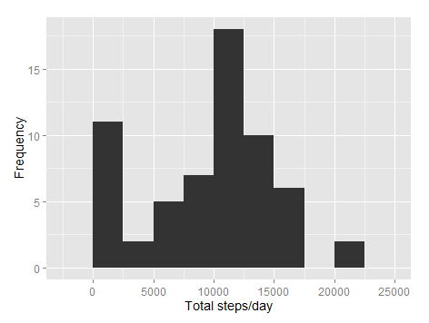
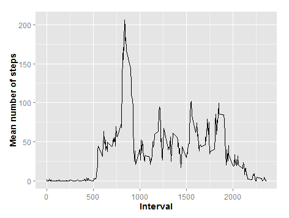
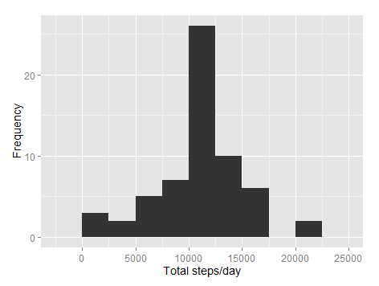
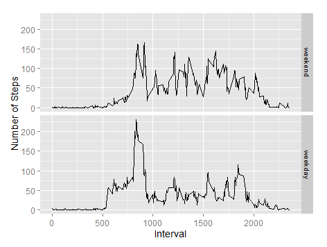

Load the data (i.e. read.csv())
activityData <- read.csv ("activity.csv", header = T, sep = ",", stringsAsFactors = F)
Process/transform the data (if necessary) into a format suitable for your analysis
activityData$date <- as.Date(activityData$date, "%Y-%m-%d")
Calculate the total number of steps taken per day
library (dplyr)
AvgDay <- activityData %>% group_by(date) %>% summarize(total.steps = sum(steps, na.rm = T), mean.steps = mean(steps, na.rm = T))
If you do not understand the difference between a histogram and a barplot, research the difference between them. Make a histogram of the total number of steps taken each day
library(ggplot2)
g <- ggplot(AvgDay, aes(x=total.steps))
g + geom_histogram(binwidth = 2500) + theme(axis.text = element_text(size = 12), axis.title = element_text(size = 14)) + labs(y = "Frequency") + labs(x = "Total steps/day")

Calculate and report the mean and median of the total number of steps taken per day
summary(AvgDay$total.steps)
| Min | 1st Qu | Median | Mean | 3rd Qu | Max |
|---|---|---|---|---|---|
| 0 | 6778 | 10400 | 9354 | 12810 | 21190 |
summary (AvgDay$mean.steps)
| Min | 1st Qu | Median | Mean | 3rd Qu | Max | NA's |
|---|---|---|---|---|---|---|
| 0.1424 | 30.7000 | 37.3800 | 37.3800 | 46.1600 | 73.5900 | 8 |
Make a time series plot (i.e. type = “l”) of the 5-minute interval (x-axis) and the average number of steps taken, averaged across all days (y-axis)
AvgInterval <- activityData %>% group_by(interval) %>% summarize(mean.steps = mean(steps, na.rm = T))
g <- ggplot(AvgInterval, aes(x = interval, y = mean.steps))
g + geom_line() + theme(axis.text = element_text(size = 12), axis.title = element_text(size = 14, face = "bold")) + labs(y = "Mean number of steps") + labs(x = "Interval")

Which 5-minute interval, on average across all the days in the dataset, contains the maximum number of steps?
The maximum average number of steps is: 206 and occurs in time interval #835
Calculate and report the total number of missing values in the dataset (i.e. the total number of rows with NAs)
mean(is.na(activityData$steps))
0.1311475
sum(is.na(activityData$steps))
2304
Devise a strategy for filling in all of the missing values in the dataset. The strategy does not need to be sophisticated. For example, you could use the mean/median for that day, or the mean for that 5-minute interval, etc.
Using the average steps per interval. We will use this metric to fill in the NAs.
Create a new dataset that is equal to the original dataset but with the missing data filled in.
newData <- activityData
for (i in 1:nrow(newData)) { if (is.na(newData$steps[i])) { index <- newData$interval[i] value <- subset(AvgInterval, interval==index) newData$steps[i] <- value$mean.steps } }
Make a histogram of the total number of steps taken each day and Calculate and report the mean and median total number of steps taken per day. Do these values differ from the estimates from the first part of the assignment? What is the impact of imputing missing data on the estimates of the total daily number of steps?
g <- ggplot(newAvg, aes(x=total.steps))
g + geom_histogram(binwidth = 2500) + theme(axis.text = element_text(size = 12), axis.title = element_text(size = 14)) + labs(y = "Frequency") + labs(x = "Total steps/day")

Create a new factor variable in the dataset with two levels – “weekday†and “weekend†indicating whether a given date is a weekday or weekend day.
newData$day <- ifelse(weekdays(newData$date) %in% c("Saturday", "Sunday"), "weekend", "weekday")
wkend <- filter(newData, day == "weekend")
wkday <- filter(newData, day == "weekday")
wkend <- wkend %>% group_by(interval) %>% summarize(mean.steps = mean(steps))
wkend$day <- "weekend"
wkday <- wkday %>% group_by(interval) %>% summarize(mean.steps = mean(steps))
wkday$day <- "weekday"
newInterval <- rbind(wkend, wkday)
newInterval$day <- as.factor(newInterval$day)
newInterval$day <- relevel(newInterval$day, "weekend")
Make a panel plot containing a time series plot (i.e. type = “l”) of the 5-minute interval (x-axis) and the average number of steps taken, averaged across all weekday days or weekend days (y-axis). See the README file in the GitHub repository to see an example of what this plot should look like using simulated data.
g <- ggplot (newInterval, aes (interval, mean.steps))
g + geom_line() + facet_grid (day~.) + theme(axis.text = element_text(size = 12), axis.title = element_text(size = 14)) + labs(y = "Number of Steps") + labs(x = "Interval")
